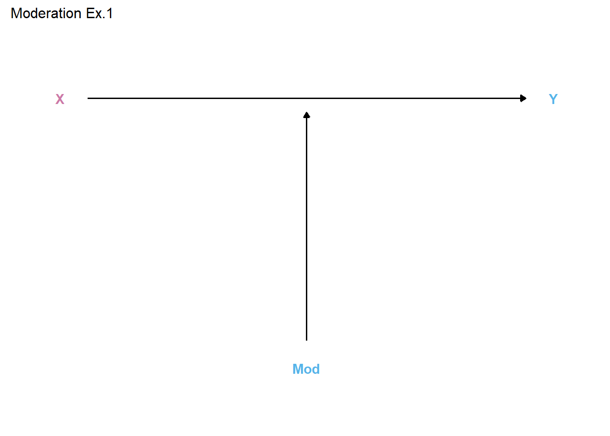
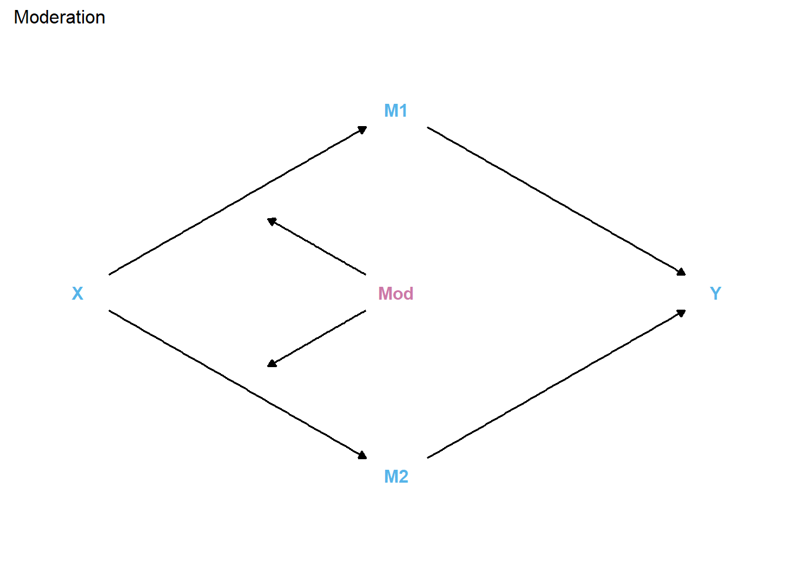

library(tidyverse)── Attaching core tidyverse packages ──────────────────────── tidyverse 2.0.0 ──
✔ dplyr 1.1.2 ✔ readr 2.1.4
✔ forcats 1.0.0 ✔ stringr 1.5.0
✔ ggplot2 3.4.2 ✔ tibble 3.2.1
✔ lubridate 1.9.2 ✔ tidyr 1.3.0
✔ purrr 1.0.1
── Conflicts ────────────────────────────────────────── tidyverse_conflicts() ──
✖ dplyr::filter() masks stats::filter()
✖ dplyr::lag() masks stats::lag()
ℹ Use the conflicted package (<http://conflicted.r-lib.org/>) to force all conflicts to become errorslibrary(ggdag)
Attaching package: 'ggdag'
The following object is masked from 'package:stats':
filter#Example 1: Simple effect heterogeneity (Typical moderation plot)
# Dial up X, either no change or dial up Y, depending on Mod
# Dial up Mod, turn on/dial up X -> Y
# Dial down Mod, dial down/turn off X -> Y
# https://github.com/r-causal/ggdag/issues/6
coords <- tribble(
~name, ~x, ~y,
"X", 1, 1,
"Y", 2, 1,
"Mod", 1.5, 0,
"holder", 1.5, 1.05
)
Mod1 <- dagify(
Y ~ X,
holder ~ Mod,
coords = coords
) %>%
tidy_dagitty() %>%
dplyr::mutate(Mod = ifelse(name != "X", "#56B4E9", "#CC79A7"))
Mod1p <- Mod1 %>% ggplot(aes(x = x, y = y, xend = xend, yend = yend)) +
# geom_dag_point(data = function(x) filter(x, name != "holder")) +
geom_dag_edges() +
geom_dag_text(data = function(x) filter(x, name != "holder"),
aes(color = Mod)) +
theme_dag() +
guides(fill = 'none', color = 'none') +
scale_color_manual(values = c("#56B4E9","#CC79A7")) +
scale_y_continuous(expand=expansion(mult=c(0.2,0.2))) +
#change default expansion on y-axis min & max
ggtitle("Moderation Ex.1") +
theme(plot.title = element_text(size = 12))
Mod1p
#Example 2: Shunting or switching process
# Dial up X, either dial up M1 or M2, depending on Mod
# Dial up Mod, turn on M1 -> Y, turn off M2 -> Y
# Dial down Mod, turn off M1 -> Y, turn on M2 -> Y
# Dial up M1, dial up Y
# Dial up M2, dial down Y
Mod2 <- dagify(
Y ~ M1 + M2,
M1 ~ X ,
M2 ~ X ,
holder1 ~ Mod,
holder2 ~ Mod,
exposure = "X",
outcome = "Y",
coords=list(
x=c(X=0, holder1=.5, holder2=.5, Mod=1, M1=1, M2=1, Y=2),
y=c(X=0, M1=1, M2=-1, Y=0, holder1=.5, holder2=-.5, Mod=0)
)) %>% tidy_dagitty() %>%
dplyr::mutate(Mod = ifelse(name != "Mod", "#56B4E9", "#CC79A7"))
Mod2p <- Mod2 %>% ggplot(aes(x=x, y=y, xend=xend, yend=yend)) +
# geom_dag_point(aes(color = Mod)) +
geom_dag_edges() +
geom_dag_text(data = function(x) filter(x, !name %in% c("holder1","holder2")),
aes(color = Mod)) +
theme_dag() +
guides(fill = 'none', color = 'none') +
scale_color_manual(values = c("#56B4E9","#CC79A7")) +
scale_y_continuous(expand=expansion(mult=c(0.2,0.2))) +
#change default expansion on y-axis min & max
ggtitle("Moderation") +
theme(plot.title = element_text(size = 12))
Mod2p